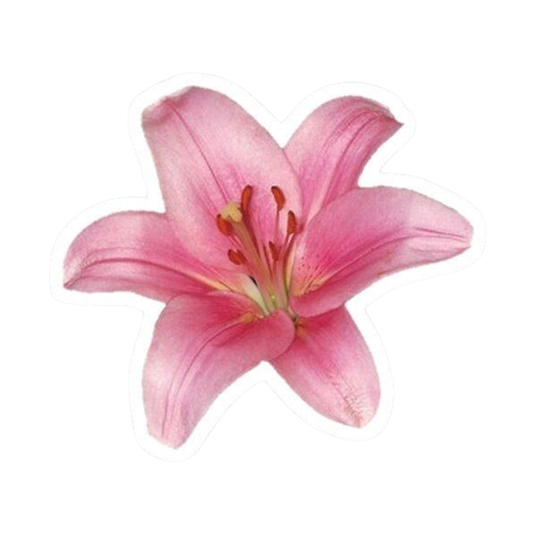
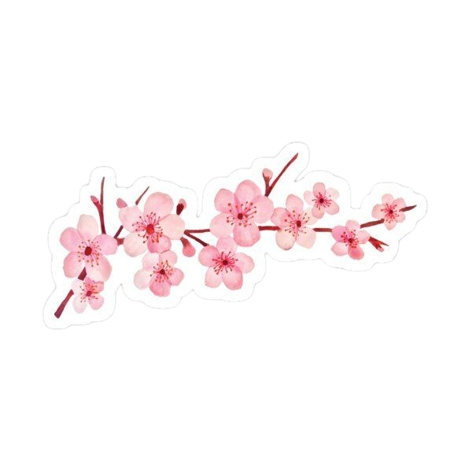
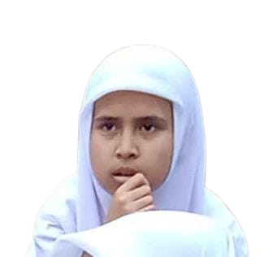
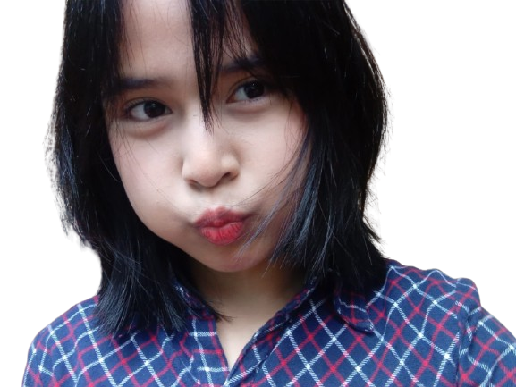
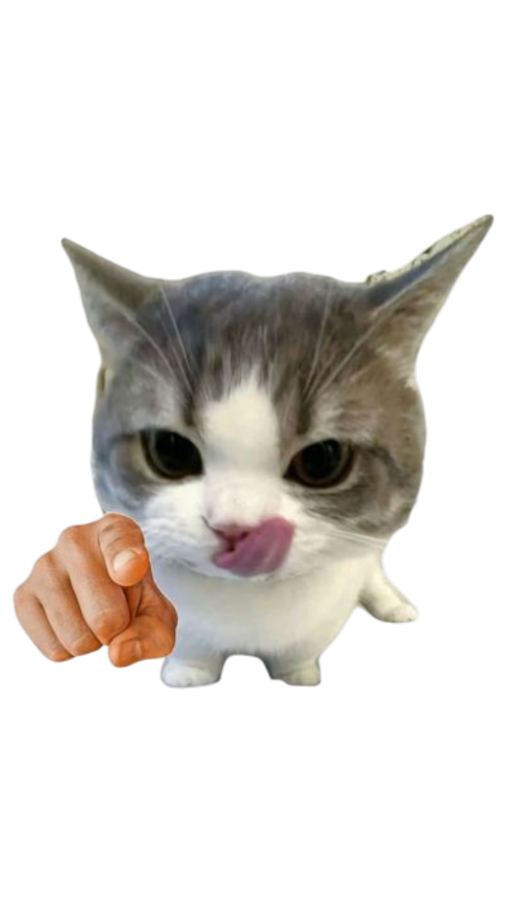

kamu dari sudut pandang aku??
kamu dari sudut pandangku, hemm kamu itu orangnya kelewat baik, pinter, sabarnya setinggi langit (kadang bisa setipis tisu yang dibagi 2 si), kamu juga orangnya pekerja keras, cantik, banyak yang suka kamu, cengeng (aku suka itu), dann masi banyak lagii (kalo aku sebutin semuanya nanti kaya rel kereta api panjangnya).
terus kamu itu orangnya gaenakan, selalu merasa bersalah, selalu minta maaf, dan masi banyak lagi.. aku harap kamu bisa jadi orang yang ga people pleaser dan lebih banyak bilang makasi daripada maaf (apalagi kalo ke aku, aku pengen kamu jadi diri kamu sendiri didepan aku dan gajadi orang gaenakan depan aku).
u're magic. don't forget that